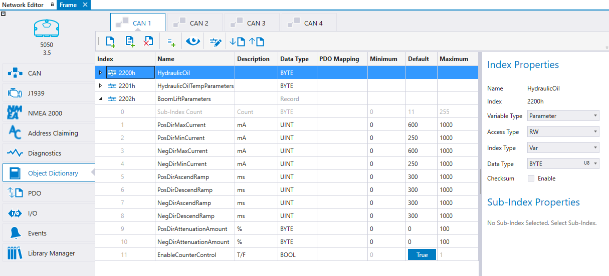

select the CAN channel from the tabs
select  icon to add new index
icon to add new index
-
or icon to add a pre-defined index
select icon to add a sub-index to the selected index
The Object Dictionary is the most important part of any CANopen device, the interface between the application and CAN bus. This topic describes the Object Dictionary tab functionality, such as
To add an index,
select the CAN channel from the tabs
select  icon to add new index
icon to add new index
or icon to add a pre-defined index
select icon to add a sub-index to the selected index
To delete an index or sub-index, select the index and select  icon.
icon.

All the actions on the Object Dictionary tab are described in the following table:
|
Icon |
Short Description |
Description |
|
|
Add Index |
Adds an index to the Object Dictionary |
|
Add Sub-Index |
Adds a sub-index to the selected index |
|
|
Add Pre-Defined Index |
Pre-defined indexes idea is to reduce the time that is needed for parameter definitions for often used functions and/or libraries. The pre-defined index is a set of parameters including descriptive variable names, preselected value ranges and default values. When a predefined index is added, the value range and default value configuration can be fine-tuned to fit the project.
MultiTool Creator includes predefined indexes containing all the needed sub-indexes for the following Epec libraries:
You can also create your own pre-defined indexes, see Creating PDIs |
|
|
|
Delete Index |
To delete an index or sub-index, select the row and select Delete Index.
|
|
|
Show Hidden |
When the Show Hidden icon is selected, the device's automatically generated indexes (for example, manufacturer specific indexes and communication parameters) are shown in the list. These indexes are not editable. Automatically generated indexes depend on the device type. For more information, see section Default OD Indexes.
|
|
|
Store/Restore Settings |
The application specific store (1010h) and restore (1011h) sub-indexes can be defined by Store/Restore Settings. To add sub-indexes to Store/Restore Settings, select To delete a sub-index from Store/Restore Settings, select the sub-index and then the icon
For more information, see section Using Non-Volatile Memory.
|
|
|
Import |
Imports an EDS/DCF/XDD/XDC/XML file that describes the communication behavior and object dictionary of a CANopen device. For more information, see section Importing EDS / DCF / XDD / XDC / XML
|
|
|
Export |
Exports an EDS/DCF/XDD/XDC/XML file. For more information, see section Exporting EDS / DCF / XDD / XDC / XML
|
The index and sub-index properties are described in the following table:
|
Property |
Description |
||||||||||||||||||||||||||||||||||||||||||||
|
Name |
The name of the index. In case the index type is ArrayOf or Record, this is also the variable's name. No duplicates allowed. The index name can be changed from the Index Properties or directly from the index table.
|
||||||||||||||||||||||||||||||||||||||||||||
|
Index |
The index number in hexadecimal format. The index number can be changed from the index table. No duplicates allowed. Indexes between 5FFFh-5FB0h are reserved. The sub-index number is in decimal format. Then sub-index number can be changed by drag-and-drop.
Variable types are represented by the following icons:
|
||||||||||||||||||||||||||||||||||||||||||||
|
Variable Type |
The possible variable types are: - RAM: Variables exist only in the device’s RAM memory, on reboot the values return to default - Parameter: A variable can be saved to the device’s non volatile memory - Retain(*): Automatically written to the non-volatile memory, The value returns to default when a new application is downloaded. Supported for ArrayOf and Record index types. - Retain Persistent(*): Automatically written to the non-volatile memory, the value is retained even if a new application is downloaded to the device. Supported for ArrayOf and Record index types. - Safety Parameters(*): A variable can be saved to the device's non-volatile memory. Authentication is required to adjust safety parameters. Parameter validity is checked during every boot-up.
* The variable type possibilities depends on the hardware
|
||||||||||||||||||||||||||||||||||||||||||||
|
Access Type |
Defines the access type to variables through CAN bus: Read only (RO), Write only (WO), Read and write (RW). Read only variables can still be written in the application.
MultiTool Creator does not restrict the use of access types but CANopen standard does. According to the standard - the OD variables that can be mapped to transmit PDO can have only access types RO, CONST and RWR - receive PDO supports only types WO and RWW - RWR and RWW are used for objects that can be read and written via SDO
|
||||||||||||||||||||||||||||||||||||||||||||
|
Index Type |
The index types are - Var: The index has only the sub-index 0. The sub-index has it's own variable name. - SingleVariables: All sub-indexes have their own variable name. The index type is the same for all sub-indexes. - ArrayOf: The index name defines the name of the array, sub-indexes are array cells, for example <Name>[ArrayIndex]. The Data Type is the same for all sub-indexes. - Record: The index name defines the variable name of a structure instance, sub-indexes are variables in the structure. Sub-indexes can be of different Data Types. The variables can be referenced in CODESYS using the following format <Name>.<Variable Name>
|
||||||||||||||||||||||||||||||||||||||||||||
|
Data Type |
Data Type can be changed from the index table or from the Index Properties, depending on the Index Type. The Data Type is one of CODESYS' variable types:
A STRING type variable are initialized as STRING(79), 79 characters long variables. STRING type variables cannot be mapped into PDO. A BOOL type variable can have values TRUE or FALSE, 8 bits of memory space will be reserved. BOOL type variables cannot be mapped into PDO.
If a safety parameter is selected, BOOL or STRING data types cannot be used.
|
||||||||||||||||||||||||||||||||||||||||||||
|
Checksum |
Checksum is selectable only if the Variable Type is Parameter. Select the Checksum to calculate the checksum for the parameters. For more information, see section Checksum.
|
||||||||||||||||||||||||||||||||||||||||||||
|
Bits |
When Bits is selected, the bit variables are generated to CODESYS code according to selected Data Type. The variable names for the bits can be edited from the index table. Bit variable has the following editable properties: Name, Description and Default.
Bits is not selectable if the Data Type is BOOL.
|
||||||||||||||||||||||||||||||||||||||||||||
|
Description |
The Description is shown in CODESYS as a comment text associated with the variable name. The Description can be added/changed from the index table.
|
||||||||||||||||||||||||||||||||||||||||||||
|
PDO Mapping |
When PDO Mapping is selected from the index table, the variable can be mapped to transmit and receive PDO(s). PDO Mapping is selectable for RAM, Retain or RetainPersistent Variable Types. BOOL and STRING types cannot be mapped in to a PDO.
|
||||||||||||||||||||||||||||||||||||||||||||
|
Minimum |
Value range minimum for the variable that can be edited from the index table. This value does not affect to CODESYS, it is used in the parameter CSV file. For more information, see section Editing CSV.
|
||||||||||||||||||||||||||||||||||||||||||||
|
Default |
The variable’s default value is used in the CODESYS as a variable’s initial value.
|
||||||||||||||||||||||||||||||||||||||||||||
|
Maximum |
Value range maximum for the variable that can be edited from the index table. This value does not affect to CODESYS, it is used in the parameter CSV file. For more information, see section Editing CSV.
|
|
|
The checksum indexes are always linked to only one CANopen device. It is not possible, for example, to read the checksum from CANopen device1 through CANopen device2. This kind of linking can be implemented in the application code manually, it is not automatically supported by MultiTool Creator.
|
To use checksum calculation, select the Checksum property from the Index Properties for all indexes that are used to calculate the checksum.
The Object Dictionary indexes 2050h and 2051h are reserved for the checksum calculation. The 2050h index contains the indexes from which the checksum is calculated. The 2051h index contains the information about checksum calculation result and the checksum value.
The definitions for these indexes can be found from CODESYS code template global variables, for example OD1_VAR. The following example has three indexes from which the checksum is calculated and the OD1_VAR has the following definitions:
OD_Device1_ChkSum_Indices: ARRAY[1..3] OF WORD := [16#2201, 16#2202, 16#2200];
OD_Device1_ChkSum_Status: ARRAY[1..2] OF WORD := [0, 0];
In case the checksum calculation is used, the function SaveODCalcCrc call is added to the code template's protocol init (PLC_PRG > Init_Protocols_CanX) for each CAN channel that has a selection for the checksum calculation.
Drag-and-drop can be used to reorganize the Object Dictionary items.
To create an array to the Object Dictionary tab:
Add an index
On the Name column, give the array <ArrayName>, for example TestArray
Then, add the size of the array either
either by giving the amount of array indexes between square brackets <ArrayName>[AmountOfArrayIndexes] , for example TestArray[20] (**)
or defining start and end array index <ArrayName>[StartIndex..EndIndex], for example TestArray[0..10]
Click ENTER and MultiTool Creator asks if the index type can be changed from SingleVariables to ArrayOf
Select OK
The index will be updated according to the selection
** Note that when using this method for array definition, the Project > Preferences > Default Array Start Index selection has an affect to the array start index.
To create a record to the Object Dictionary tab:
Add an index and open it
On the Name column, give the record name <RecordName> , for example TestRecord
Then, add the first record member <RecordName>.<MemberVariable>
Click ENTER and MultiTool Creator asks if the index type can be changed from SingleVariables to Record
Select OK
The index will be updated according to the selection
Pressing ENTER adds more sub-indexes easily
To create user PDIs:
Select OD indexes (press CTRL to select multiple indexes)
Right-click and select Create PDI Set.
Give a name for the new set and click Save.
All the PDI sets saved in the directories given in Settings, are shown when clicking
The xml file for a PDI set can also be created manually.
Epec Oy reserves all rights for improvements without prior notice.
Source file 7_9_3_OD.htm
Last updated 25-Jun-2025